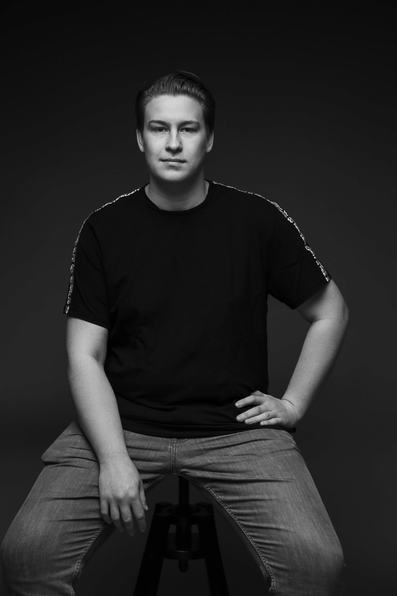

- Home
- Portfolio
- CV
- Contact
Martijn van der Lans
Front-end Developer and UX designer
Wie ben ik?
Mijn naam is Martijn van der Lans. Ik ben 23 jaar oud en studeer momenteel aan de Hogeschool van Amsterdam. Ik zit dan ook in mijn derde jaar van de studie Communication and Multimedia Design. (CMD)
In mijn vrije tijd spreek ik graag af met vrienden, of dit nou onder genot van een drankje is of online tijden het gamen. Daarnaast ben ik in mijne vrije tijd ook altijd bezig met het maken van leuke kleine codes.
Voordat ik op deze opleiding kwam had ik al een voorliefde voor coderen in HTML en CSS. Pas toen ik les hierover kreeg leerde ik hoe ik deze codes semantisch kon maken en hoe ik dan ook kon zorgen voor een goede Search Engine Optimalisation.
In September 2023 wil ik graag stage gaan lopen en nog liever dan dit wil ik dit doen bij een bedrijf waar ik kan doorgroeien als front-end developer or full-stack developer. Op het moment heb ik ervaring met HTML5, CSS, Javascript en NodeJS
Daarnaast heb ik ook ervaring met werken vanuit github
Laatste toevoeging.
Coolblue - Frontend
Voor 1 van mijn vakken was het de bedoeling om 2 pagina's na te maken van een website. Ik had voor dit vak de website van Coolblue gekozen.
Bekijk meer →